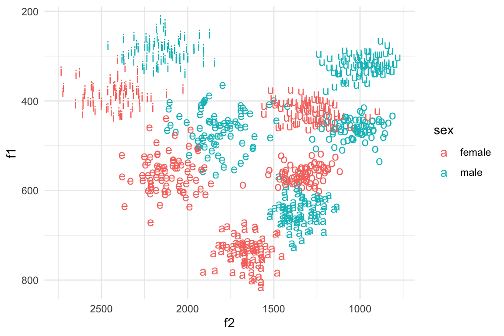

library(tidyverse)
library(untidydata)Week 5: A working example
The purpose of this page is to provide you with a working example of the final project. I select a publicly available dataset, create some visualizations, then run t-tests and report my results.
Week 1 Data Vislualization
Week 2 Descriptive Statistics
Week 3 T-tests
Final Project Bringing it all together
Set up
Set up is the same as always: Open an R Script (File, New File click R Script). For set up, run the following code in the newly opened R script to load the tidyverse and untidydata packages.
0 Data Description
I’ve chosen vowel_data to work with. This data set contains a simulated experiment of the production of the five Spanish vowels (a, e, i, o, and u) by 50 speakers (25 male and 25 female) 3 times each. As a result, the data set contains 750 total observations (50 x 5 x 3). Each vowel is measured by two numbers: F1 (or the first formant), which is an acoustic correlate measured in Hz of the height of the tongue in the mouth when a vowel is produced (lower Hz = higher positioning of the tongue), and F2, which is the same except it measures frontness and backness (higher F2 = more fronted). We will say that my hypotheses is that the male vowel space is higher than females on average (observed by lower f1 values).
Just for organizational purposes, I am going to call the data from the untidydata package and add it to the object vowel_df. I prefer to do this because it makes it apper in the Global Environment, so I can view the structure of the data by clicking on it and its current number of rows and columns are viewable.
vowel_df = untidydata::spanish_vowels 1 Create a visualization
First, I’ll create a plot to visualize my hypothesis. To do this, I need to change the format of my data. Imagine your data is a spreadsheet, and having to move columns in rows manually (you would not want to do this, because it’s tedious and easy to make a mistake). Instead, we can essentially transform data using these tidyverse in R.
So first, look at what the data looks like. I am using glimpse() here, but you can simply click on the data if you saved it to an object.
glimpse(vowel_df)Notice that we have 4 columns, but we could (and want to) have more. The first column (called “label”), actually has 3 pieces of information, the participant’s id, their sex, and the vowel that they produced on that trial (each row is one experimental trial). So, to split the column “label” into three new ones, we use a function called separate(). To use it, we need to tell it to take column X, split it into two or more columns, and what is used to separate the data (in this case, “-”). Here is what it looks like:
vowel_df_tidy = vowel_df %>%
separate(label, into = c("ppt_id", "sex", "vowel"))We should now have 6 rows, not 4.
Now that my variables are in their own columns, I am in an ideal situation to create a plot. I chose a scatterplot that shows the productions of all 5 vowels and color-codes them according to their age:
vowel_df_tidy %>%
ggplot(aes(x = f2, y = f1, label = vowel, color = sex)) + geom_text() +
scale_y_reverse() + scale_x_reverse() + theme_minimal()
An inspection of the plot does suggest that our hypothesis is supported, but we should now have a few new questions: 1) what is the magnitude of the differences we see?, and 2) are the differences “statistically significant”.
2 Report Descriptive statistics
I will start here by showing an example of how to extract the mean, standard deviation and calculate the effect size (Cohen’s d) for just the phoneme /a/, and then show you a created function that repeats the same process for the other four vowels. (You only need to do the first part: analyze one comparison, but I wanted you to see how this can be pushed further to semi-automate an analygous process).
First, I can extract the mean and standard deviation for each vowel and sex using the following code:
descriptive_df = vowel_df_tidy %>%
group_by(vowel, sex) %>%
summarise(mean = mean(f1),
sd = sd(f1),
n = n())
#> `summarise()` has grouped output by 'vowel'. You can override using the
#> `.groups` argument.Then I filter for /a/:
f1_df_a = descriptive_df %>%
filter(vowel == "a")Now I calculate the effect size (mean difference divided by the pooled standard deviation - the mean of the sd in this case because the samples are of equal size):
num = f1_df_a$mean[1] - f1_df_a$mean[2] # female to male
den = mean(f1_df_a$sd)
es = round(num/den, digits = 2)This returns 2.86.
Here is a function that I created to essentially repeat all the steps above given a different vowel. The function uses the already loaded data and just needs to be given a vowel. It returns text reporting the mean, sd and Cohen’s d in prose.
calculate_effect_size = function(vowel_filter)
{
this_df = descriptive_df %>%
filter(vowel == paste0(vowel_filter))
num = this_df$mean[1] - this_df$mean[2] # female to male
den = mean(this_df$sd)
mf = round(this_df$mean[1], digits = 2)
sdf = round(this_df$mean[2], digits = 2)
mm = round(this_df$sd[1], digits = 2)
sdm = round(this_df$sd[2], digits = 2)
es = round(num/den, digits = 2)
msg = paste0("The effect size difference going from female to male for the vowel ", vowel_filter, " was Cohen's d = ",
es, ". The mean for females was ", mf, " (sd = ", sdf,"), and the mean for males was ", mm, " sd = ",
sdm,").")
return(msg)
}calculate_effect_size("a")
calculate_effect_size("i")
calculate_effect_size("e")
calculate_effect_size("o")
calculate_effect_size("u")The effect size difference going from female to male for the vowel a was Cohen’s d = 2.86. The mean for females was 735.17 (sd = 642.4), and the mean for males was 31.61 sd = 33.28).
The effect size difference going from female to male for the vowel i was Cohen’s d = 3.68. The mean for females was 385.07 (sd = 286.62), and the mean for males was 27.67 sd = 25.89).
The effect size difference going from female to male for the vowel e was Cohen’s d = 2.27. The mean for females was 558.85 (sd = 460.96), and the mean for males was 42.39 sd = 43.76).
The effect size difference going from female to male for the vowel o was Cohen’s d = 5. The mean for females was 560.22 (sd = 459.19), and the mean for males was 18.65 sd = 21.76).
The effect size difference going from female to male for the vowel u was Cohen’s d = 4.6. The mean for females was 420.54 (sd = 318.6), and the mean for males was 22.1 sd = 22.24).
3 Run t-tests to test a hypothesis and report the result
Finally, I want to run some kind of test on the data (to infer whether the collected sample is like equal to or different than 0).
First, I make it so that each row of the data represents participant means (it needs to for the t-test).
vowel_mean_df = vowel_df_tidy %>%
group_by(ppt_id, vowel, sex) %>%
summarise(mean_f1 = mean(f1))
#> `summarise()` has grouped output by 'ppt_id', 'vowel'. You can override
#> using the `.groups` argument.Now, I filter for only /a/.
a_df = vowel_mean_df %>%
filter(vowel == "a")Finally, I run the t-test:
t.test(mean_f1 ~ sex, data = a_df)The results are significant: t(47.4) = 17.2, p < .05. We take this as evidence in support of our hypothesis: males produce higher vowels for /a/ that females.
I also have a function to repeat this process for all vowels:
run_and_report_t_test = function(vowel_filter)
{
this_df = vowel_mean_df %>%
filter(vowel == paste0(vowel_filter))
t_res = t.test(mean_f1 ~ sex, data = this_df)
p = ifelse(t_res[["p.value"]] < .05, "< .05", "> .05")
t = round(t_res[["statistic"]], digits = 2)
df =round(t_res[["parameter"]], digits = 2)
msg = ifelse(t_res[["p.value"]] < .05,
paste0("For the vowel, ",vowel_filter,", the result of a Welch Two Sample t-test was significant: t(",df,") = ",
t, ", p < .05."),
paste0("For the vowel, ", vowel_filter,", the result of a Welch Two Sample t-test was not significant: t(",df,") = ",
t, ", p > .05."))
return(msg)
}Running the tests:
run_and_report_t_test("a")
run_and_report_t_test("e")
run_and_report_t_test("i")
run_and_report_t_test("o")
run_and_report_t_test("u")For the vowel, a, the result of a Welch Two Sample t-test was significant: t(47.48) = 17.21, p < .05.
For the vowel, e, the result of a Welch Two Sample t-test was significant: t(47.98) = 14.96, p < .05.
For the vowel, i, the result of a Welch Two Sample t-test was significant: t(46.86) = 22.34, p < .05.
For the vowel, o, the result of a Welch Two Sample t-test was significant: t(43.13) = 31.17, p < .05.
For the vowel, u, the result of a Welch Two Sample t-test was significant: t(45.79) = 31.15, p < .05.